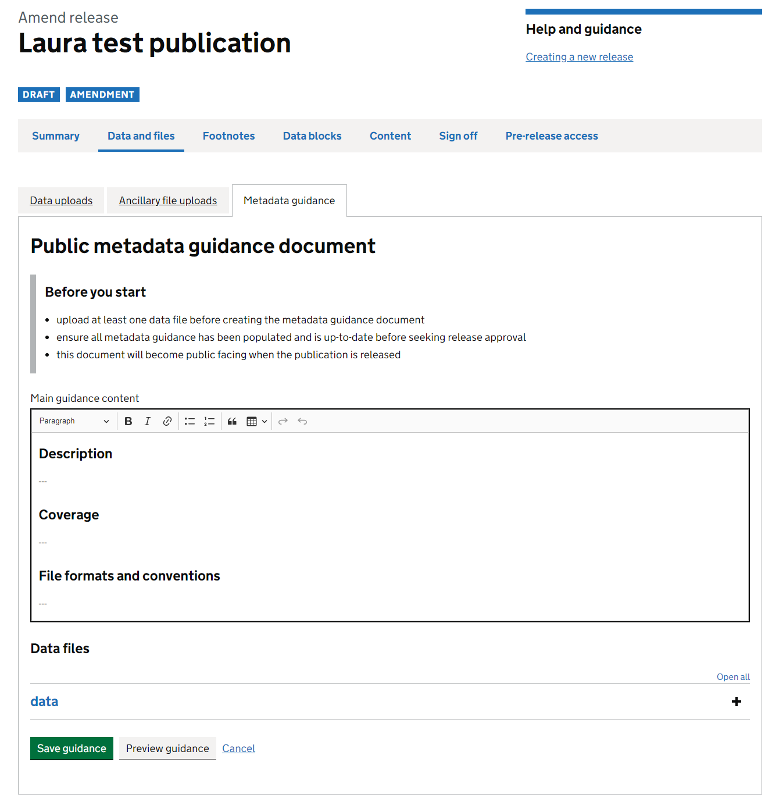
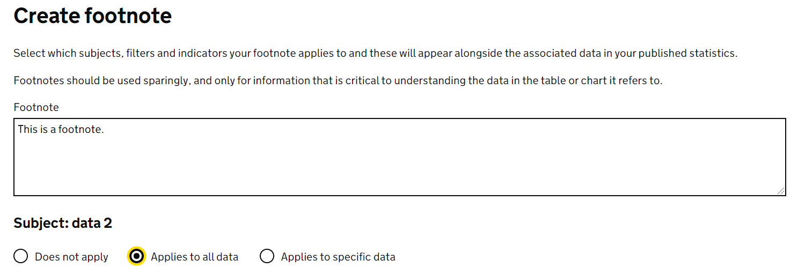
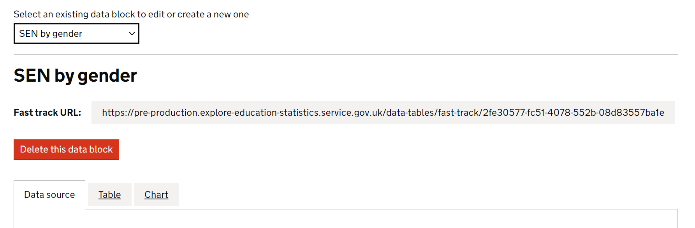
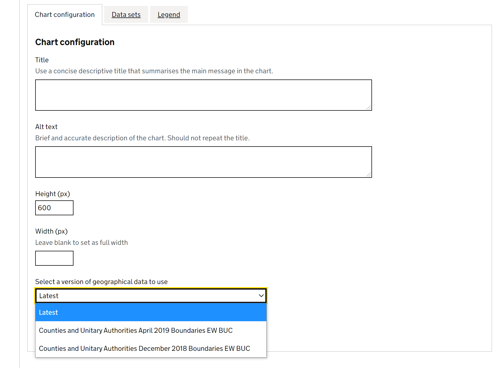
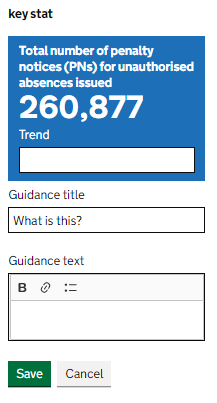
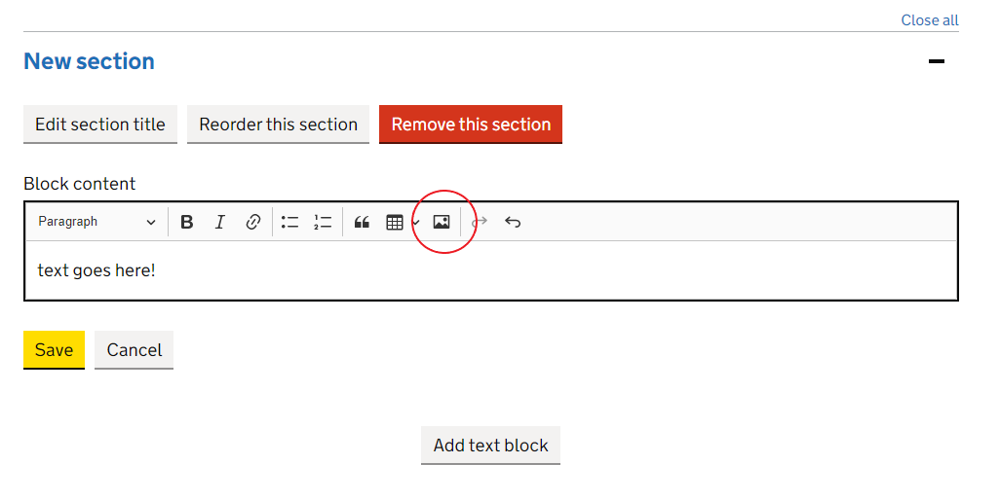

Explore Education Statistics
Guidance for how to use the features in the Explore Education Statistics platform
Explore Education Statistics (EES) is the Department’s official statistics dissemination platform, designed to make DFE’s published statistics and data easier to find, access, use and understand.
The EES platform consists of two applications:
The public website, where users access stats
The admin website, where production teams create their stats
The majority of the admin side of EES is only supported in Google Chrome and Microsoft Edge and will not work correctly in Internet Explorer. The public website and pre-release previews of releases in admin can be viewed using Internet Explorer, though we still recommend that people use Chrome or Edge instead.
Both applications were released to Minimal Viable Product (MVP) standard in March 2020, we will be iterating and improving the functionality based on user feedback throughout 2020 and 2021.
Maintenance and use of the platform is supported by the Statistics Development Team.
Accessing EES
Environments
As stated above, EES consists of two parts. We also have four versions (environments) of EES, the banner for the admin part of each environment will inform you which environment you are on, this is also colour coded:
Development - Green - where changes are first merged in, and often the first time different pieces of work from different developers will interact properly
Test - Pink - where our developers can carry out manual testing of any new features to make sure things work as expected
Pre-production - Yellow - a sandbox area for analysts to carry out functionality testing
Admin pre-production - https://admin.pre-production.explore-education-statistics.service.gov.uk
Public pre-production - https://pre-production.explore-education-statistics.service.gov.uk
- Production - Red - the real service, anyone creating real releases that they intend to publish to the public should be using this environment
Admin production - https://admin.explore-education-statistics.service.gov.uk
Public production - https://explore-education-statistics.service.gov.uk
There is no overlap between the environments and content created on one cannot be moved to any other.
If you are bookmarking links, please be careful to bookmark the links below exactly as they are shown. Often when signing in you will be redirected via other url’s as a part of the authentication process, and bookmarking those may lead to errors.
Teams can use the pre-production environment to familiarise themselves with the platform and test out what is possible. The core functionality across the environments is identical except for new changes, which are deployed through the different environments before they make it to production.
On the pre-production environment, all analysts have full permissions to create publications and releases, and can see everything else that other analysts are making. This is unique to the pre-production environment, on the production environment analysts will only have access to releases that they have been granted specific access to.
When accessing the pre-production environment you may be asked for a username and password, these are as follows: dfe, dataresearch.
The pre-production environment is not suitable for unpublished data. Unpublished data should only be uploaded to the production environment.
Getting access to admin
Access to the production and pre-production admin services is limited to DfE AD accounts only and users have to have been invited to the service by either the Statistics Development Team (for full access) or an existing user (for pre-release access). Invites to the service are sent out via email using gov.uk Notify.
To be invited to the service for full access teams need to email the Explore Statistics Mailbox, stating who needs access, what permissions they require (analyst or approver), and for which publications these apply. This email should be sent by the Team Leader, or accompanied with the relevant Team Leader’s approval. Once access has been granted you will receive an email inviting you to use the platform.
Jobshare emails can not be used to access EES. Specific personal emails should be used instead, in the same way as you sign in to windows on your machine.
Roles and permissions
The Statistics Development Team are responsible for setting up and maintaining user permissions during the beta phase. Change requests will be monitored via their main mailbox - explore.statistics@education.gov.uk.
The following roles exist within EES admin and are assigned to a specific release:
Pre-release
Any user invited for pre-release is given a pre-release user role. During the hours of pre-release they can:
- Preview the release page, including downloading files
- Preview the table tool page for that release
Analyst - contributor
Any analyst working on a release within EES admin will have the contributor role. They can:
- Edit release details
- Upload data and other files
- Create footnotes, datablocks and charts
- Edit and comment on release content
- Invite PRA users
- Move the release status between draft and ready for higher review
Analyst - approver
The responsible statistician for a statistics release will have the approver role, allowing them to sign off releases for publication. This will usually be the responsible G5 or G6 for the statistics publication. They can do everything a contributor can, as well as:
- Move the release status between draft, ready for review and approved
- Schedule the release for publication (either immediately or for a specific date)
There is also a publication owner role, which is assigned at publication level to a users account:
Publication owner
This permissions level gives publication owners control over their publications. They can do anything a contributor can for all releases within the publication. On top of this the publication owner also has access to:
- Manage publication level details
- Create new releases within a publication
- Create an amendment of the latest published release within a publication
- Cancel an amendment before it is published
BAU
The administrative role:
- This role is assigned to a user and gives full access including administrative tools, typically only used by the Statistics Development Team and EES developers.
See below for a diagram of the responsibilities of each role as part of the publication process in EES:

Requesting a new publication
If you have not published on EES before, or if you’re creating a brand new publication, you will need to contact us to create the publication for you before you can get started.
The hierarchy of content within EES is as follows -

Publications are organised into topics and themes (as shown on the EES Find Statistics page), and then within each publication there are releases - where the latest release includes the latest statistics for that publication. For example:
| Level | Example |
|---|---|
| Theme | Pupils and Schools |
| Topic | Pupil absence |
| Publication | Pupil absence in schools in England |
| Release | 2018/19 |
Each publication should have a lead statistician’s name and contact details attached to it as a requirement of the Code of Practice. You may use a team email address but the name and telephone number of a named statistician should also be provided.
Methodology documentation is also attached at a publication level within EES - meaning one standalone piece should be written to cover all releases for the given publication within the service.
If you want to request a new publication, please be prepared to give the following:
- The heading and subheading that you want the publication to sit under in our site (take a look at the current structure here), feel free to either use existing ones, or suggest new ones
- The exact title of the publication
- A summary of less than 160 characters (including spaces) that describes your publication series
- If the methodology already exists elsewhere and you have a URL for it, or if you want to create one
- Team name
- Team email address
- Lead statistician name
- Lead statistician contact number
- The time period of the release you’re creating
- Whether they are National statistics, an ad-hoc publication, or official statistics
- List of email addresses of analysts who need access to the release and at what permission levels
Publication details can be managed by publication owners or via requests to the Explore Statistics Mailbox.
Admin dashboard
Use Google Chrome or Microsoft Edge to access and use the admin part of Explore Education Statistics.
When you enter the service you’ll see the admin dashboard, here what you can see will be dependent on your access permissions i.e. you’ll only see the publications that you have been granted access to. Within the test environment users are set up with full permissions (i.e. they can see/do everything) though in our production environment this will be restricted.
The Statistics Development Team will be responsible for setting up and maintaining user permissions during the beta phase. Change requests will be monitored via their EES mailbox - explore.statistics@education.gov.uk.
Within this dashboard you can view and manage existing publications, including creating and editing their releases. You can use the drop down lists to find releases by theme/topic/publication or use the draft and scheduled releases tabs to see releases that are in progress.
External user access
Access to EES for users outside of DfE is difficult as the authentication and security on the service relies on the DfE Azure Active Directory and associated infrastructure. It is possible to request that external users from other government organisations have access, and they can then be added as collaborating analysts on a release or as pre-release viewers.
If you have external users you’d like to request access for, please send the following to explore.statistics@education.gov.uk, at least two weeks in advance of requiring access. Due to the dependency on DfE’s digital security we cannot guarantee access or how long it may take.
- Email addresses of users to be added
- Reason for access
- Length of time access is needed
Creating releases
New releases can be created by publication owners or via requests to the Explore Statistics Mailbox. If you’re requesting a new release via the mailbox, please give the following:
- Name of the publication (including theme and topic that it sits under)
- Time period for the release
- Time identifier for the release
- Type of release (National, Official, Ad-hoc etc)
Once you have created your release you will see enter the ’create release dashboard, here you need to work through the following tabs to create your release:
Data and files (uploading data files, ancillary files and creating data guidance)
Footnotes (creating footnotes and assigning to relevant data)
Data blocks (creating summary tables, charts and key stats indicators)
Content (drafting release content)
Sign off (moving through the approval process)
Pre-release access (invite users to pre-release and create public pre-release list)

Data and files
Here you will update your data files and accompanying metadata. You need to make sure that the data has passed through our data screener checks before trying to upload it.
All data files are accessible in the downloadable files for users to explore in the same format as they are uploaded.
Subject titles
You’ll need to give a ‘subject title’ to each data file you upload. The subject name should be a simple user-friendly title for the data included within the file - it is what users will see wherever the file is referenced within EES. The actual file name and data guidance can include more technical / coverage information.
When adding a subject name think about the general user and how the subjects will appear in the service:
You don’t need to include the publication name in the subject name as this is always already implied within EES
You don’t need to list what filters are in each file in the title, users can see this in the data guidance
You don’t need to include the date ranges covered in each file in the title, users can see this in the data guidance
Your subject names should be short and snappy, clearly explain what is in each file. Some good examples of this in practice are included below:
- Early years provision by provider type
- Exclusions and suspensions by pupil characteristics
- ITT new entrants by subject and training route
You can make changes the subject title for your data file after it has been uploaded if needed using the ‘Edit title’ option.
Uploading files
When uploading files you have a choice between uploading as separate CSV files or as a combined ZIP file.
For data files greater than 80mb we recommend uploading as a ZIP file.
Once you click to upload the file a ‘Status’ will be visible that shows the progress of the import process. It will go through the following stages:
- Queued
- Validating
- Importing
- Complete
This may take a little while depending on the size of your file and if there are numerous files queued for import. You cannot view the dataset or use it to create tables/charts until this status is ‘COMPLETE’.
If you believe your file is ‘stuck’ please contact explore.statistics@education.gov.uk, with details of the file and the release that you are uploading to.
Ordering filters and indicators
To save time when creating tables and charts, and to aid users who view your data themselves via the table tool, you can now save custom orders for your filters and indicators. You can do this in the data and files page after uploading underlying data files, via the ‘reorder filters and indicators’ tab. Once there just choose which file you want to reorder and then click and drag the items until they’re in the order you want them to show in the table tool. This then becomes the default order for this filter or indicator and will apply in all charts and tables automatically.

Ancillary file uploads
Any files you want to make available for users to download but aren’t intended the table tool should be added as an ancillary file upload. These files will need to meet all requirements of the new accesibility regulations before they can be published.
Examples of ancillary files may be:
- Infographic pages
- Supplementary data that isn’t intended for the table tool
- Additional technical documentation
For ensuring that spreadsheets are accessible see the guidance from .gov.wales, and this blog post that walks you through some ways that you can recreate the experience of using spreadsheets.
Any data files that only consist of Planning area, and/or Institution level data should be uploaded as an ancillary file, rather than as a data file.
Public data guidance
Here you should also create your public data guidance document, this replaces the information that would have previously been uploaded as a pdf and is designed to help users understand and use the data they download from your release.

The document will automatically update as you add new data files to your release, however you will need to add an overview of all the data included in the release and short summaries for each data file before the release can be published.
A list of variables in each file with an associated label (taken from metadata uploads) and associated footnotes will also be displayed for each file.

Releases cannot be published without a completed metadata document. If not filled in an error will be flagged during sign off.
Replacing data
If you just need to change the subject title for your data file you do not need to go through the whole replacement process, just click the ‘Edit title’ option.
However, if you notice a mistake in your data file you can replace it with another. When replacing a data file the platform will attempt to recreate any data blocks and footnotes that were built using the previous file.
The replacement file must contain the exact same column names and types as the original. For example, a character column named “date” must also be replaced with a character column named “date”. A numeric column named “date” will not work in the replacement.

The first step is to upload the new file.

One you’ve chosen and uploaded your replacement file it will need to go through the usual import process before it can check if retaining existing data blocks and footnotes will be possible.

Once the upload is finished a report will appear which highlights whether existing data blocks and footnotes can be replaced successfully. If you want to keep any data blocks and footnotes you’ve built you will need to make sure that your replacement data file still contains the information (indicators, filters, geographic_levels and time_periods) that was used to create them.

If it’s not possible for a data block or footnote to be recreated using the replacing data file a warning will appear and you’ll be prompted to either edit or delete them before completing the replacement.

Remember to double check any data blocks or footnotes that were recreated by the platform before publishing your release.
Footnotes
We generally advise against using footnotes, unless they’re absolutely necessary (think about how many people will actually be reading them!). Consider where you could signpost to the methodology /data guidance / commentary instead. However, if you do want to add footnotes to your data, this should be done using the EES footnote function.
Footnotes are added via footnotes tab - rather than writing multiple tables and assigning individual footnotes, you write footnotes and assign them to certain indicators and filters so they appear when users select them in the table builder. For example in the below, the footnote “This is a footnote” is assigned to “Headcount” indicator for all options within the “School type” filter.

If you’d rather, you can assign a footnote to the whole data file by ticking this box.

You can assign the same footnote across multiple data files.
We recommend that you only add footnotes once you are certain the data file is final. If you have to delete the data file, all the assigned footnotes will be deleted alongside it.
Data blocks (tables and charts)
A data block is a smaller cut of data from your original file that you can embed into your publication as a presentation table, build charts from, or link users directly to.
Tables
Here you can create data blocks, using the admin table tool to create and save your summary tables. Remember to use the reorder table headers tool to restructure your table however you want it before you save.
Once you’re happy with your table, give it a title and some source information before clicking save. The source should be the source of the data used to create the data file that was then used for the data block table, for example ‘School Census’.
The manage data blocks page will list all the data blocks you have created, highlighting which have charts, are used in content and are saved as highlight tables.

Featured tables
You can also choose to highlight a data block table as a ‘featured table’ which means it will show in a list of featured tables within the table tool. This is designed to help users get to tables of interest more quickly (without having to create tables themselves).
There is an option to choose if a table is a ‘featured table’ when saving each data block, here you can name the table and add a description giving the table coverage:

Each featured table will then be listed to the user within the table tool. Featured tables do not have to be embedded within your release content to be included in this list.

Fast track links
Any data block tables that are created and saved within the admin app will also be assigned a ‘fast-track link’, this url can then be used throughout your release as a way to direct users to specific tables (within the table tool) more quickly so they can interact and explore the data further. It will appear at the top of the page like this:

When your release is published, any embedded data block tables within the release will have an ‘explore data button’ beneath them which will utilise these fast track links to quickly direct users to the table within the table tool so they can explore the data further. You can also use fast-track links as a hyperlink within release commentary (without having to embed the data block).
In your fast-track titles, you don’t want to overload information, but still want to direct the user to the right place. Remember they can go back to the table tool through your featured tables to change filters and indicators as needed.
Fast-track titles should explain:
- What the table is showing in the simplest terms
- Who/Where the data covers (e.g. characteristic groups and geography levels)
- When the data in the table is reported for
Here are a few examples of good fast-track titles in EES:
- Number of Schools and Pupils, by School Type, 2015/16 to 2020/21
- Absence Rates by School Type, 2016/17 to 2020/21
- Free School Meals, by Region, 2015/16 to 2020/21
What is the difference between a fast-track link and a permalink?
EES also offers ‘permalinks’ for any table created in the table tool which allows a user to save a link to a permanent, static, version of a table they have created. Analysts can make use of these permalinks when answering queries or in PQ and FOI responses.
Fast-track links are similar to permalinks however instead of linking to a static version of a table they link to an ‘active’ version of the table within the table tool - meaning users can interact and change what’s shown in the table from within the table tool if they choose to.
Charts
After building and saving a data block table you will see a ‘Chart’ tab appears. This tab will take you to the EES chart builder, where you can choose to add a chart to your data block.
The first step to creating a chart is choosing the chart type, currently the EES chart builder can build line charts, horizontal/vertical bar charts (including stacked and clustered) and maps.
After choosing your chart type you then need to work through the following stages to build your chart. In each stage you’ll be shown a live preview as you make changes.
Chart configuration
Within the ‘chart configuration’ tab you can add a title, alt text, move the legend and change chart dimensions.
Make sure to review your chart dimensions before you publish. Users should be able to read the labels on the axes and see the legend without having to scroll.

Note, within the vertical and horizontal bar chart types you can also create stacked bar charts by clicking the ‘Stacked bars’ option within the chart configuration tab
Data sets
Here is where you add data to the chart. You can add each series one at a time or all together.

Legend
You can edit the chart legend, and styling of your series via the Legend tab.

To select specify custom colours outside of the defaults, you can double click on the colour codes at the bottom of the colour picked until you get to the type of code you’re wanting to input (e.g. hex code) and then enter the code manually.
X axis (major axis)
Here is where you configure the x-axis: You can alter gridlines, labels, sort, limit and add reference lines.

| Option | What it does |
|---|---|
| Size of axis | Change the width of the space given to axis tick labels |
| Show grid lines | Turn grid lines on and off |
| Show axis | Turn the axis on and off, you can also add a unit to the axis tick labels |
| Sorting | Change how the data within the chart is sorted |
| Tick display type | Alter how often axis tick labels are shown, labels will automatically skip values where there are too many to show without overlapping |
| Axis range | Alter the range of data shown in the chart |
| Label | Add an axis label, you can also choose the width for the space given to it |
| Reference lines | Add/remove reference lines to the chart |
Y axis (minor axis)
Then follow a similar process for the y axis configuration, play around until the chart looks how you want it to.

| Option | What it does |
|---|---|
| Size of axis | Change the width of the space given to axis tick labels |
| Group data by | Change how the data within the chart is grouped |
| Show grid lines | Turn grid lines on and off |
| Show axis | Turn the axis on and off, you can also add a unit to the axis tick labels |
| Sorting | Change how the data within the chart is sorted |
| Tick display type | Alter how often axis tick labels are shown, labels will automatically skip values where there are too many to show without overlapping |
| Axis range | Alter the range of data shown in the chart |
| Label | Add an axis label, you can also choose the width for the space given to it |
| Reference lines | Add/remove reference lines to the chart |
Changing chart type
If you create your chart and then change your mind as to what chart type would be best you can just click to change it and it will try to save all the options that you had applied previously.
Remember to save your chart when you’re done.
Maps
You can create maps too, currently this is possible for regional, LA and LAD data.
You can change the boundaries you are plotting onto via the “chart configuration” tab, the latest boundary file will automatically be selected, but if you are visualising historic data, you may want an older boundary file. Please contact us if the boundary you want to plot is unavailable.

Then to create a map, add the cuts of data you want to display in the “data sets” tab of the chart builder.

You can change the colour scale of the chart in the “legend” tab.

Other chart types
You should only use complex charts where there is a clear user need, as simple charts are the easiest for users to understand. If you have a an infographic or a chart that is too complex to build within our chart builder you can use the ‘Choose an infographic as alternative’ option to upload an image to your data block or use the Add embed block feature to embed an R-Shiny based plot (see the section on embedded blocks for further information).
Infographic alternatives should be .svg format and you can use the sizing options within the data block editor to size your image appropriately.
Accessibility matters for infographics too, consider the following if you do need to upload an image -
- Keep them simple
- Use colours that are available in EES - see our visualisation guidance for more details
- Don’t put borders around images
- Read the GSS guidance on the use of colour in visualisations and follow the steps provided to check your visualisations
- Try to avoid adding text to your images other than axis labels and limited annotations. Titles and headings can be added in the “chart configuration” tab instead
You can use R to create infographics and the following code gives an example of how to create a basic line chart or stacked bar chart using the appropriate GSS sequential colour palette.
# Load the necessary libraries
library(ggplot2)
library(dplyr)
# This is the GSS standard categorical colour palette
gss_categorical_palette <- data.frame(
names = c('Dark Blue', 'Turquoise', 'Dark pink', 'Orange', 'Dark grey', 'Light purple'),
hex = c("#12436D", '#28A197', "#801650", "#F46A25", "#3D3D3D", "#A285D1"),
id = c(1,2,3,4,5,6))
# Set up a dummy data-set.
# Note the line factor(...,levels=...) allows you to order your filter values in
# the final plot based on the ordering entered into the levels keyword. If left,
# it'll default to alphabetical.
data <- data.frame(
time_period=c("2018/19","2018/19","2018/19","2018/19","2018/19","2018/19",
"2019/20","2019/20","2019/20","2019/20","2019/20","2019/20",
"2020/21","2020/21","2020/21","2020/21","2020/21","2020/21"),
Filter=c(gss_categorical_palette$names,
gss_categorical_palette$names,
gss_categorical_palette$names),
indicator1=sample(4:16,18,replace=TRUE) +
c(gss_categorical_palette$id,gss_categorical_palette$id,gss_categorical_palette$id)*3
) %>%
mutate(
time_period=as.factor(time_period),
Filter=factor(Filter,levels=gss_categorical_palette$names)
)
# Create a line chart
ggplot(data, aes(x=time_period, y=indicator1, group=Filter, colour=Filter )) +
geom_line(size=1.2) +
scale_color_manual(values=gss_categorical_palette$hex) +
theme_classic() +
theme(
legend.position = "bottom",
text = element_text(size = 14, family = "Arial"),
strip.text.x = element_text(size = 20)
) +
ylab("Indicator 1") +
xlab("Time period")
# Create a stacked bar chart
ggplot(data, aes(x=time_period, y=indicator1, fill=Filter )) +
geom_bar(stat = "identity") +
scale_fill_manual(values=gss_categorical_palette$hex) +
theme_classic() +
theme(
legend.position = "bottom",
text = element_text(size = 14, family = "Arial"),
strip.text.x = element_text(size = 20)
) +
ylab("Indicator 1") +
xlab("Time period")The above code should produce something along the lines of the following plots:


Content
In the content tab you can now start creating your release, embedding the data blocks you’ve created as you go.
You can use the page view toggles, that float in the bottom left of the page, to jump between edit and preview mode for the release and to view a preview of the table tool.
Add any headline and/or key stats and figures for your release in the headline facts and figures section.
You can then create accordion sections to start adding your main release commentary. These sections are made up of text blocks and data blocks which can be reordered as needed.
Headline facts and figures
Use the ‘Add secondary stats’ button to add a data block to your headline stats section.
Use the ‘Key stats’ options to add key statistic tiles to your release. For each tile you first have to have created a data block that contains only one number.

After embedding a key stat tile you can then edit it to add trend information and a description of what the indicator is.
| Element | Content |
|---|---|
| Indicator name | Automatically generated from your data |
| Latest value | Automatically generated from your data |
| Trend | A short one-sentence description of the trend; try to avoid only stating the change from the previous year and talk about the longer-term trend where appropriate |
| Guidance title | E.g. ‘What is NEET?’ or ‘What are permanent exclusions?’ |
| Guidance text | A simple description in plain English of what the indicator is |
Drafting text
About these statistics
We recommend that the first accordion section in each release should be ‘About these statistics’. Do not assume that users will read it, the nature of interactive pages means that the reader may start at any accordion section so remember to include essential information in the section to which it refers.
Avoid filling this section with:
- Crucial caveats or information necessary for accurate interpretation of the statistics, these should be included within the main commentary next to the point they relate to
- Technical information that is not relevant to the interpretation of the statistics should be saved for the methodology
- Definitions should be included within the main commentary when they are first mentioned
- Lists or descriptions of what is in the commentary as these should be clear from the contents and accordion headings
Try to focus the ‘About these statistics’ section on:
- Say why the data are collected and what they are used for or could be used for, including relevant policies and targets
- The different geographical levels for which data is published
- Non-essential but important information about the statistics, such as:
- The data collection window, mode of data collection and response rates in terms of whether these are representative
- Clarification of the population coverage
- Changes in data collection or analysis methods from previous releases
- Links to relevant related statistics including the cause of any differences
- Further useful detail on specific measures used in the release
- Non-urgent notices to users such as minor error corrections and delays or changes to the next publication. If there is something important which you want all users to know about then give it its own accordion section.
Footnotes
Do not use footnotes in the text of your content. They’re designed for reference in print, not web pages. If the information in the footnotes is important, include it in the body text. If it’s not, leave it out.
Tables in content
Any data tables should be included as data blocks, however you can also embed static html tables within a text box. These should only be used to present textual tables or for any small presentations of data that are not possible to do in a data block at the moment.
You can create static html tables for presenting information that isn’t embedded in a data block. However, remember that all of the data included or referred to in your content should be available (or createable) from the downloadable open data files.
Footnotes for tables in content
If you are including a table in text that needs footnotes, it’s generally advised to include this in the commentary surrounding the table. However, if you think a footnote is still necessary, then we advise writing out the word ‘note’, with the number of the note you need to refer to, and put it in square brackets, for example: ‘Number of people in employment [note 1]’. For more guidance on footnotes outside of EES, see the Analysis Function guidance on symbols, footnotes and codes.
Reviewing content
While a release is in draft mode, comments can be added to text to help teams collaborate. Simply highlight the text you want to comment on and click on the speech bubble in the editing bar to add a comment.

Comments can be edited at a later date, and can also be marked as resolved so that you can see which comments have been addressed and which are still outstanding.
When someone is editing a text box, it will now be instantly frozen for all other users preventing two users from editing the same block of text at the same time. You will be able to see the name of the user who is making edits, and will see the edits coming through every few seconds as their changes autosave.

Embedding R-Shiny blocks
If you need to include a type of chart that isn’t possible using the standard EES chart options, for example an interactive chart with filters, you can embed a block to display a custom R-Shiny produced chart.
To embed a shiny chart, you’ll first need to create an R-Shiny application containing the chart using the DfE tiny-shiny template and get it hosted on our DfE GitHub and ShinyApps accounts. More details on both of these are available in the tiny-shiny section of this guidance.
Once you’ve got the R-Shiny app set up and hosted, you can embed it using the Add embed block button in the content area. This will give you the option to enter a URL, where you can enter the URL of the shiny app. Valid URLs to use in the embed block dialogue box are limited to only those on the DfE ShinyApps server (and the internal rsconnect when needed for draft publications).

Glossary
Our glossary on EES is a growing page that helps us to standardise how refer to key terms and phrases across all of Official statistics - https://explore-education-statistics.service.gov.uk/glossary.
Adding new definitions
Contact us at explore.statistics@education.gov.uk, with the title and definition and we can add this for you. It’s worth having a check on the glossary for similar or related terms, and whether you should be looking to harmonise with other teams.
Linking to definitions
You can link to any term in the glossary by appending the glossary url with #name-of-definition, replacing any spaces with hyphens.
For example, to link to the definition for ‘Respite care’, you would use the following link:
https://explore-education-statistics.service.gov.uk/glossary#respite-care
You can test this works by typing the url into your browser, it should take you to that specific definition on the glossary page. If you’re unsure at all, or have special characters in the title of your glossary entry, please ask us for support on getting the right link.
Linking from your release
When writing your release content, highlight a word or phrase and click the link icon in the text editor bar.
Then, paste your glossary url into the box that appears.

That’s it, the system will automatically recognise that the link is for the glossary and will do the rest. You can then change to the preview mode to see how this would then appear to public users, and test that the box appears with the definition.

Sign off
Once you’re happy with your release you need to go to the sign off page and change it’s status in order to move it through the release pipeline.
There are three statuses:
- In draft (where the production team work on drafting the release)
- Ready for higher review (where the senior statistician checks over the release before approving)
- Approved for publication (after approval has been given, releases in this status will be published on their scheduled date)
Only users with approver permissions (usually G6 or above) can sign off the release for publication.
Errors and warnings
There’s quite a few things to remember to do as you build your release so to help ensure you haven’t missed anything a release checklist is also available via the sign off page
The checklist can be accessed by clicking to edit release status.
Remember to check over it before you submit your release for approval as a release that has outstanding warnings on it will not be able to be published.
How to approve a release
Releases are approved via the sign off tab. The release date is also set during this stage of the process. All releases scheduled for a specific date will be published at 9:30am on that day.

The approver has the ability to approve the release to be published on a specific date or to publish as soon as possible. Publishing as soon as possible is useful for publishing amendments to existing releases.
This page also gives you the expected release url which may be useful to know for other things, for example, sending to the web team to add to your gov.uk announcement page.
Next release expected
You also have the option to add a date for when the next release is expected. This will appear at the top of a release page and give users an idea of when to expect the next release in the publication series. You can provide the planned month and year of the next release within this publication.
If this is added but then needs to be changed or removed later in the year it is easy to do so, by creating an amendment and setting a new next release expected date on sign-off.
Pre-release access
Prior to each release going live the production team are also able to grant pre-release access to a named group of users 24 hours before it goes live. These users do not require full access to the whole admin service. They will be able to see preview versions of any releases they have been granted access to.
This preview is only accessible for the 24 hours before the publication date, the emails may go out to users before then. We expect teams will continue to send an email at 09:30 on pre-release day, including any additional briefing and the link to the pre-release area.
Jobshare emails should not be sent invites for pre-release. The personal emails for the specific individuals should be used instead, as jobshare emails do not have active accounts with DfE to access EES.
Pre-release access via Explore Education Statistics is currently limited to DFE users only, if you need to share your release with external users you will need to do so outside of the system.
Inviting users for pre-release access and building the public pre-release list can be found within the ‘Pre-release access’ tab on the dashboard.
Once the release has been marked as approved, go to the ‘Pre-release access’ tab and add the relevant email addresses to grant pre-release access. All invited users will receive an email to say that they have been given pre-release access and will get a url where the preview release will be available.

You should also create the public facing pre-release access page by clicking the ‘Public access list’ tab.

After creating your pre-release access list a text editor will appear where you can list the roles that have been given early access to the release. This list will then appear in the list of file downloads at the top of each release.
Release amendments
If you need to make an amendment to release that has already been published this is possible to do from within the admin dashboard if you are a publication owner. If you need to create an amendment and your publication owner is not available, please contact the Statistics Development Team to do this for you.

Creating an amendment of a release will create a new version for which you can make any changes and then choose to republish, either as soon as possible or on a given date.
Release notes
When publishing a new amendment you should add a ‘release note’ to your release so users can be informed of what has changed:

Methodology
Methodologies work in a very similar way to the written content of a release, the text editor and static tables you can use are built on the same foundations.
If you have not created or published a methodology page on EES before, the first thing your publication owner will need to do is create a methodology page.

Once created you can then edit the methodology content in a similar way to how you would create release page content.
Methodologies should follow our recommended methodology template, to ensure all the essential details are covered.
Once the drafting has finished, a methodology should be set as ‘approved for publication’, currently approved methodology changes will be published immediately so make sure you are ready for the changes to go live before approving.
If you want to revise an existing methodology page you can amend the methodology which will generate a new version for you to edit.

Once you’re happy with your amendment it just needs to be approved in the usual way for it to be published.
Methodology formatting
Subheadings make it easier for your users to navigate through your methodology. When editing text blocks in your methodology, you can do this by highlighting your subheading and selecting “Heading 3” in place of “Paragraph”:

You can add further subheadings underneath this but try to limit the number of subheadings per accordion to 10 at the most. Too many subheadings will make it tricky for users to find what they are looking for.
Methodology images
You can add images to methodology pages via the content editor.

When uploading an image you will need to add alt text via by clicking the eye symbol, you may also choose to add an image caption.

Accessibility matters for uploaded images too, consider the following if you do need to upload an image -
- Keep them simple
- Use GDS colours
- Don’t put borders around images
- Ensure there is a high enough colour contrast ratio between elements. You can use a colour contrast checker to check the colours you’re using
- Try to avoid adding text to your images other than axis labels and limited annotations.
Managing publications
We have a type of role within EES admin called ‘Publication Owner’. This permissions level gives publication owners control over their publications.
Options available to publication owners:

Publication management
Use this page to change the details for your publication, such as the contact information or to add links to legacy releases on gov.uk.
Any updates here will affect all releases in the series and will be published immediately.
It is possible to change the publication title via this page, however this should be used rarely and will not affect the publications url if one or more published releases exist.

Create new release
After finding the publication you want to create a release for, just press the button to create a new release.
Currently the following types of release can be created in EES:
- National Statistics (includes OSR tick mark logo at the top of the release page)
- Official Statistics
- Adhoc Statistics
When creating a release you will be asked to fill in some release summary fields.
The time period for the release should reflect the time period of the data that this latest release adds to the time series.
Managing legacy releases
Past publications on other services can be added to the previous releases links that appear on the top right of a release page by using the ‘Manage legacy releases’ section. In here you can add links to previous releases and choose the order in which they appear.
This section can be found by publication owners in the publication management section.